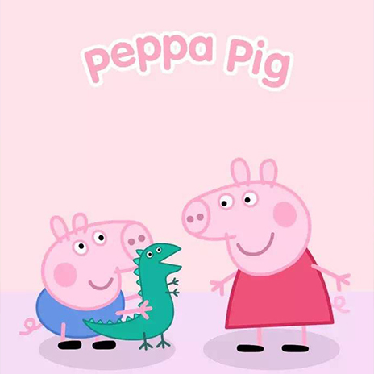

- 
-
在这部动画片里，所有的角色对白和情 节设定都符合三个原则——
不用难字、没有长句、不含偏见。虽然每集的播出时间只有五分钟，但制作时间要花三个月。
除此以外，它的画面设计非常干净清新， 人们甚至不会注意到上面的线条，
配色上也在活泼和柔和之间，找到了很好的 平衡。
因为这部动画片 非常贴合5岁以下孩子的生活场景和心理特征，
并且五分钟的短剧情和简单直白的对话让很小的 孩子就能轻松看懂，
这些元素均构成了它爆红的基础。
小猪佩奇正在成为一个新的社交密码,
吉拉迪诺也好，谭维 维、杜海涛也好，以及在朋友圈发小猪佩奇 相关图片的城市白领们也好，
他们都是对这股新兴非主流文化的好奇者与闯入者，在成年人的世界，
或者 说在一个主流社会中，“小猪佩奇纹身”、“小猪佩奇手表”，注定只能是一朵小小的浪花，
但这恰恰 也是《小猪佩奇》的粉丝们所追求的效果—— 谁愿意和你们这些无趣的人类有共同语言？
我们就是这样甘于幼稚 、甘于小众、甘于非主流，因为这正是不苍老的表现。